About data modeling and why data models are important
About data modeling and why data models are importantIn this chapter, you will learn:
About data modeling and why data models are important
About the basic data-modeling building blocks
What business rules are and how they influence database design
How the major data models evolved
About emerging alternative data models and the need they fulfill
How data models can be classified by their level of abstraction
Preview
This chapter examines data modeling. Data modeling is the first step in the database design journey, serving as a bridge between real-world objects and the computer database.
One of the most vexing problems of database design is that designers, programmers, and end users see data in different ways. Consequently, different views of the same data can lead to database designs that do not reflect an organization’s actual operation, thus failing to meet end-user needs and data efficiency requirements. To avoid such failures, database designers must obtain a precise description of the data’s nature and many uses within the organization. Communication among database designers, programmers, and end users should be frequent and clear. Data modeling clarifies such communication by reducing the complexities of database design to more easily understood abstractions that define entities and the relations among them.
First, you will learn some basic data-modeling concepts and how current data models developed from earlier models. Tracing the development of those database models will help you understand the database design and implementation issues that are addressed in the rest of this book. In chronological order, you will be introduced to the hierarchical and network models, the relational model, and the entity relationship (ER) model. You will also learn about the use of the entity relationship diagram (ERD) as a data-modeling tool and the different notations used for ER diagrams. Next, you will be introduced to the object-oriented model and the object/relational model. Then, you will learn about the emerging NoSQL data model and how it is being used to fulfill the current need to manage very large social media data sets efficiently and effectively. Finally, you will learn how various degrees of data abstraction help reconcile varying views of the same data.
2.1 DATA MODELING AND DATA MODELS
Database design focuses on how the database structure will be used to store and manage end-user data. Data modeling, the first step in designing a database, refers to the process of creating a specific data model for a determined problem domain. (A problem domain is a clearly defined area within the real-world environment, with well-defined scope and boundaries, that will be systematically addressed.) A data model is a relatively simple representation, usually graphical, of more complex real-world data structures. In general terms, a model is an abstraction of a more complex real-world object or event. A model’s main function is to help you understand the complexities of the real-world environment. Within the database environment, a data model represents data structures and their characteristics, relations, constraints, transformations, and other constructs with the purpose of supporting a specific problem domain.
NOTE
The terms data model and database model are often used interchangeably. In this book, the term database model is used to refer to the implementation of a data model in a specific database system.
Data modeling is an iterative, progressive process. You start with a simple understanding of the problem domain, and as your understanding increases, so does the level of detail of the data model. When done properly, the final data model effectively is a “blueprint” with all the instructions to build a database that will meet all end-user requirements. This blueprint is narrative and graphical in nature, meaning that it contains both text descriptions in plain, unambiguous language and clear, useful diagrams depicting the main data elements.
NOTE
An implementation-ready data model should contain at least the following components:
• A description of the data structure that will store the end-user data.
• A set of enforceable rules to guarantee the integrity of the data.
• A data manipulation methodology to support the real-world data transformations.
Traditionally, database designers relied on good judgment to help them develop a good data model. Unfortunately, good judgment is often in the eye of the beholder, and it often develops after much trial and error. For example, if each student in this class has to create a data model for a video store, it is very likely that each will come up with a different model. Which one would be correct? The simple answer is “the one that meets all the end-user requirements,” and there may be more than one correct solution! Fortunately, database designers make use of existing data-modeling constructs and powerful database design tools that substantially diminish the potential for errors in database modeling. In the following sections, you will learn how existing data models are used to represent real-world data and how the different degrees of data abstraction facilitate data modeling.
2.2 THE IMPORTANCE OF DATA MODELS
Data models can facilitate interaction among the designer, the applications programmer, and the end user. A well-developed data model can even foster improved understanding of the organization for which the database design is developed. In short, data models are a communication tool. This important aspect of data modeling was summed up neatly by a client whose reaction was as follows: “I created this business, I worked with this business for years, and this is the first time I’ve really understood how all the pieces really fit together.”
The importance of data modeling cannot be overstated. Data constitute the most basic information units employed by a system. Applications are created to manage data and to help transform data into information, but data are viewed in different ways by different people. For example, contrast the view of a company manager with that of a company clerk. Although both work for the same company, the manager is more likely to have an enterprise-wide view of company data than the clerk.
Even different managers view data differently. For example, a company president is likely to take a universal view of the data because he or she must be able to tie the company’s divisions to a common (database) vision. A purchasing manager in the same company is likely to have a more restricted view of the data, as is the company’s inventory manager. In effect, each department manager works with a subset of the company’s data. The inventory manager is more concerned about inventory levels, while the purchasing manager is more concerned about the cost of items and about relationships with the suppliers of those items.
Applications programmers have yet another view of data, being more concerned with data location, formatting, and specific reporting requirements. Basically, applications programmers translate company policies and procedures from a variety of sources into appropriate interfaces, reports, and query screens.
The different users and producers of data and information often reflect the fable of the blind men and the elephant: the blind man who felt the elephant’s trunk had quite a different view from the one who felt the elephant’s leg or tail. A view of the whole elephant is needed. Similarly, a house is not a random collection of rooms; to build a house, a person should first have the overall view that is provided by blueprints. Likewise, a sound data environment requires an overall database blueprint based on an appropriate data model.
When a good database blueprint is available, it does not matter that an applications programmer’s view of the data is different from that of the manager or the end user. Conversely, when a good database blueprint is not available, problems are likely to ensue. For instance, an inventory management program and an order entry system may use conflicting product-numbering schemes, thereby costing the company thousands or even millions of dollars.
Keep in mind that a house blueprint is an abstraction; you cannot live in the blueprint. Similarly, the data model is an abstraction; you cannot draw the required data out of the data model. Just as you are not likely to build a good house without a blueprint, you are equally unlikely to create a good database without first creating an appropriate data model.
2.3 DATA MODEL BASIC BUILDING BLOCKS
The basic building blocks of all data models are entities, attributes, relationships, and constraints. An entity is a person, place, thing, or event about which data will be collected and stored. An entity represents a particular type of object in the real world, which means an entity is “distinguishable”—that is, each entity occurrence is unique and distinct. For example, a CUSTOMER entity would have many distinguishable customer occurrences, such as John Smith, Pedro Dinamita, and Tom Strickland. Entities may be physical objects, such as customers or products, but entities may also be abstractions, such as flight routes or musical concerts.
An attribute is a characteristic of an entity. For example, a CUSTOMER entity would be described by attributes such as customer last name, customer first name, customer phone number, customer address, and customer credit limit. Attributes are the equivalent of fields in file systems.
A relationship describes an association among entities. For example, a relationship exists between customers and agents that can be described as follows: an agent can serve many customers, and each customer may be served by one agent. Data models use three types of relationships: one-to-many, many-to-many, and one-to-one. Database designers usually use the shorthand notations 1:M or 1..*, M:N or *..*, and 1:1 or 1..1, respectively. (Although the M:N notation is a standard label for the many-to-many relationship, the label M:M may also be used.) The following examples illustrate the distinctions among the three relationships.
• One-to-many (1:M or 1..*) relationship. A painter creates many different paintings, but each is painted by only one painter. Thus, the painter (the “one”) is related to the paintings (the “many”). Therefore, database designers label the relationship “PAINTER paints PAINTING” as 1:M. Note that entity names are often capitalized as a convention, so they are easily identified. Similarly, a customer (the “one”) may generate many invoices, but each invoice (the “many”) is generated by only a single customer. The “CUSTOMER generates INVOICE” relationship would also be labeled 1:M.
• Many-to-many (M:N or *..*) relationship. An employee may learn many job skills, and each job skill may be learned by many employees. Database designers label the relationship “EMPLOYEE learns SKILL” as M:N. Similarly, a student can take many classes and each class can be taken by many students, thus yielding the M:N label for the relationship expressed by “STUDENT takes CLASS.”
• One-to-one (1:1 or 1..1) relationship. A retail company’s management structure may require that each of its stores be managed by a single employee. In turn, each store manager, who is an employee, manages only a single store. Therefore, the relationship “EMPLOYEE manages STORE” is labeled 1:1.
The preceding discussion identified each relationship in both directions; that is, relationships are bidirectional:
• One CUSTOMER can generate many INVOICEs.
• Each of the many INVOICEs is generated by only one CUSTOMER.
A constraint is a restriction placed on the data. Constraints are important because they help to ensure data integrity. Constraints are normally expressed in the form of rules. For example:
• An employee’s salary must have values that are between 6,000 and 350,000.
• A student’s GPA must be between 0.00 and 4.00.
• Each class must have one and only one teacher.
How do you properly identify entities, attributes, relationships, and constraints? The first step is to clearly identify the business rules for the problem domain you are modeling.
When database designers go about selecting or determining the entities, attributes, and relationships that will be used to build a data model, they might start by gaining a thorough understanding of what types of data exist in an organization, how the data are used, and in what time frames they are used. But such data and information do not, by themselves, yield the required understanding of the total business. From a database point of view, the collection of data becomes meaningful only when it reflects properly defined business rules. A business rule is a brief, precise, and unambiguous description of a policy, procedure, or principle within a specific organization. In a sense, business rules are misnamed: they apply to any organization, large or small—a business, a government unit, a religious group, or a research laboratory—that stores and uses data to generate information.
Business rules derived from a detailed description of an organization’s operations help to create and enforce actions within that organization’s environment. Business rules must be rendered in writing and updated to reflect any change in the organization’s operational environment.
Properly written business rules are used to define entities, attributes, relationships, and constraints. Any time you see relationship statements such as “an agent can serve many customers, and each customer can be served by only one agent,” business rules are at work. You will see the application of business rules throughout this book, especially in the chapters devoted to data modeling and database design.
To be effective, business rules must be easy to understand and widely disseminated to ensure that every person in the organization shares a common interpretation of the rules. Business rules describe, in simple language, the main and distinguishing characteristics of the data as viewed by the company. Examples of business rules are as follows:
• A customer may generate many invoices.
• An invoice is generated by only one customer.
• A training session cannot be scheduled for fewer than 10 employees or for more than 30 employees.
Note that those business rules establish entities, relationships, and constraints. For example, the first two business rules establish two entities (CUSTOMER and INVOICE) and a 1:M relationship between those two entities. The third business rule establishes a constraint (no fewer than 10 people and no more than 30 people), two entities (EMPLOYEE and TRAINING), and a relationship between EMPLOYEE and TRAINING.
2.4.1 DISCOVERING BUSINESS RULES
The main sources of business rules are company managers, policy makers, department managers, and written documentation such as a company’s procedures, standards, and operations manuals. A faster and more direct source of business rules is direct interviews with end users. Unfortunately, because perceptions differ, end users are sometimes a less reliable source when it comes to specifying business rules. For example, a maintenance department mechanic might believe that any mechanic can initiate a maintenance procedure, when actually only mechanics with inspection authorization can perform such a task. Such a distinction might seem trivial, but it can have major legal consequences. Although end users are crucial contributors to the development of business rules, it pays to verify end-user perceptions. Too often, interviews with several people who perform the same job yield very different perceptions of what the job components are. While such a discovery may point to “management problems,” that general diagnosis does not help the database designer. The database designer’s job is to reconcile such differences and verify the results of the reconciliation to ensure that the business rules are appropriate and accurate.
The process of identifying and documenting business rules is essential to database design for several reasons:
• They help to standardize the company’s view of data.
• They can be a communications tool between users and designers.
• They allow the designer to understand the nature, role, and scope of the data.
• They allow the designer to understand business processes.
• They allow the designer to develop appropriate relationship participation rules and constraints and to create an accurate data model.
Of course, not all business rules can be modeled. For example, a business rule that specifies “no pilot can fly more than 10 hours within any 24-hour period” cannot be modeled. However, such a business rule can be enforced by application software.
2.4.2 TRANSLATING BUSINESS RULES INTO DATA MODEL COMPONENTS
Business rules set the stage for the proper identification of entities, attributes, relationships, and constraints. In the real world, names are used to identify objects. If the business environment wants to keep track of the objects, there will be specific business rules for the objects. As a general rule, a noun in a business rule will translate into an entity in the model, and a verb (active or passive) that associates the nouns will translate into a relationship among the entities. For example, the business rule “a customer may generate many invoices” contains two nouns (customer and invoices) and a verb (generate) that associates the nouns. From this business rule, you could deduce that:
• Customer and invoice are objects of interest for the environment and should be represented by their respective entities.
• There is a “generate” relationship between customer and invoice.
To properly identify the type of relationship, you should consider that relationships are bidirectional; that is, they go both ways. For example, the business rule “a customer may generate many invoices” is complemented by the business rule “an invoice is generated by only one customer.” In that case, the relationship is one-to-many (1:M). Customer is the “1” side, and invoice is the “many” side.
As a general rule, to properly identify the relationship type, you should ask two questions:
• How many instances of B are related to one instance of A?
• How many instances of A are related to one instance of B?
For example, you can assess the relationship between student and class by asking two questions:
• In how many classes can one student enroll? Answer: many classes.
• How many students can enroll in one class? Answer: many students.
Therefore, the relationship between student and class is many-to-many (M:N). You will have many opportunities to determine the relationships between entities as you proceed through this book, and soon the process will become second nature.
During the translation of business rules to data model components, you identify entities, attributes, relationships, and constraints. This identification process includes naming the object in a way that makes it unique and distinguishable from other objects in the problem domain. Therefore, it is important to pay special attention to how you name the objects you are discovering.
Entity names should be descriptive of the objects in the business environment and use terminology that is familiar to the users. An attribute name should also be descriptive of the data represented by that attribute. It is also a good practice to prefix the name of an attribute with the name or abbreviation of the entity in which it occurs. For example, in the CUSTOMER entity, the customer’s credit limit may be called CUS_CREDIT_LIMIT. The CUS indicates that the attribute is descriptive of the CUSTOMER entity, while CREDIT_LIMIT makes it easy to recognize the data that will be contained in the attribute. This will become increasingly important in later chapters when you learn about the need to use common attributes to specify relationships between entities. The use of a proper naming convention will improve the data model’s ability to facilitate communication among the designer, application programmer, and the end user. In fact, a proper naming convention can go a long way toward making your model self-documenting.
2.5 THE EVOLUTION OF DATA MODELS
The quest for better data management has led to several models that attempt to resolve the previous model’s critical shortcomings and to provide solutions to ever-evolving data management needs. These models represent schools of thought as to what a database is, what it should do, the types of structures that it should employ, and the technology that would be used to implement these structures. Perhaps confusingly, these models are called data models, as are the graphical data models discussed earlier in this chapter. This section gives an overview of the major data models in roughly chronological order. You will discover that many of the “new” database concepts and structures bear a remarkable resemblance to some of the “old” data model concepts and structures. Table 2.1 traces the evolution of the major data models.
TABLE 2.1 Evolution of Major Data Models
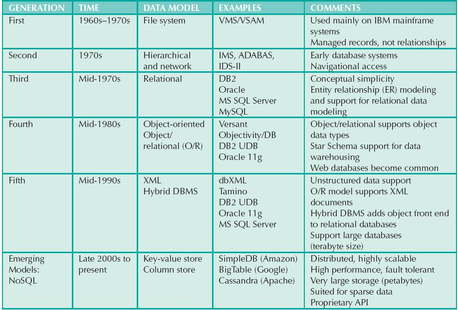
 ONLINE CONTENT
ONLINE CONTENT
The hierarchical and network models are largely of historical interest, yet they do contain some elements and features that interest current database professionals. The technical details of those two models are discussed in Appendixes K and L, respectively, which are available at www.cengagebrain.com. Appendix G is devoted to the object-oriented (OO) model. However, given the dominant market presence of the relational model, most of the book focuses on that model.
2.5.1 HIERARCHICAL AND NETWORK MODELS
The hierarchical model was developed in the 1960s to manage large amounts of data for complex manufacturing projects, such as the Apollo rocket that landed on the moon in 1969. The model’s basic logical structure is represented by an upside-down tree. The hierarchical structure contains levels, or segments. A segment is the equivalent of a file system’s record type. Within the hierarchy, a higher layer is perceived as the parent of the segment directly beneath it, which is called the child. The hierarchical model depicts a set of one-to-many (1:M) relationships between a parent and its children segments. (Each parent can have many children, but each child has only one parent.)
The network model was created to represent complex data relationships more effectively than the hierarchical model, to improve database performance, and to impose a database standard. In the network model, the user perceives the network database as a collection of records in 1:M relationships. However, unlike the hierarchical model, the network model allows a record to have more than one parent. While the network database model is generally not used today, the definitions of standard database concepts that emerged with the network model are still used by modern data models:
• The schema is the conceptual organization of the entire database as viewed by the database administrator.
• The subschema defines the portion of the database “seen” by the application programs that actually produce the desired information from the data within the database.
• A data manipulation language (DML) defines the environment in which data can be managed and is used to work with the data in the database.
• A schema data definition language (DDL) enables the database administrator to define the schema components.
As information needs grew and more sophisticated databases and applications were required, the network model became too cumbersome. The lack of ad hoc query capability put heavy pressure on programmers to generate the code required to produce even the simplest reports. Although the existing databases provided limited data independence, any structural change in the database could still produce havoc in all application programs that drew data from the database. Because of the disadvantages of the hierarchical and network models, they were largely replaced by the relational data model in the 1980s.
The relational model was introduced in 1970 by E. F. Codd of IBM in his landmark paper “A Relational Model of Data for Large Shared Databanks” (Communications of the ACM, June 1970). The relational model represented a major breakthrough for both users and designers. To use an analogy, the relational model produced an “automatic transmission” database to replace the “standard transmission” databases that preceded it. Its conceptual simplicity set the stage for a genuine database revolution.
NOTE
The relational database model presented in this chapter is an introduction and an overview. A more detailed discussion is in Chapter 3, The Relational Database Model. In fact, the relational model is so important that it will serve as the basis for discussions in most of the remaining chapters.
The relational model’s foundation is a mathematical concept known as a relation. To avoid the complexity of abstract mathematical theory, you can think of a relation (sometimes called a table) as a matrix composed of intersecting rows and columns. Each row in a relation is called a tuple. Each column represents an attribute. The relational model also describes a precise set of data manipulation constructs based on advanced mathematical concepts.
In 1970, Codd’s work was considered ingenious but impractical. The relational model’s conceptual simplicity was bought at the expense of computer overhead; computers at that time lacked the power to implement the relational model. Fortunately, computer power grew exponentially, as did operating system efficiency. Better yet, the cost of computers diminished rapidly as their power grew. Today, even PCs, which cost a fraction of what their mainframe ancestors cost, can run sophisticated relational database software such as Oracle, DB2, Microsoft SQL Server, MySQL, and other mainframe relational software.
The relational data model is implemented through a very sophisticated relational database management system (RDBMS). The RDBMS performs the same basic functions provided by the hierarchical and network DBMS systems, in addition to a host of other functions that make the relational data model easier to understand and implement.
Arguably the most important advantage of the RDBMS is its ability to hide the complexities of the relational model from the user. The RDBMS manages all of the physical details, while the user sees the relational database as a collection of tables in which data are stored. The user can manipulate and query the data in a way that seems intuitive and logical.
Tables are related to each other through the sharing of a common attribute (a value in a column). For example, the CUSTOMER table in Figure 2.1 might contain a sales agent’s number that is also contained in the AGENT table.
FIGURE 2.1 Linking relational tables
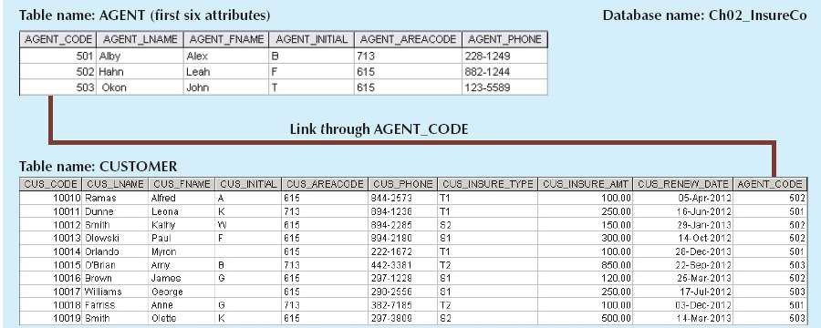
SOURCE: Course Technology/Cengage Learning
ONLINE CONTENT
This chapter’s databases are available at www.cengagebrain.com. For example, the contents of the AGENT and CUSTOMER tables shown in Figure 2.1 are in the database named Ch02_InsureCo.
The common link between the CUSTOMER and AGENT tables enables you to match the customer to his or her sales agent, even though the customer data are stored in one table and the sales representative data are stored in another table. For example, you can easily determine that customer Dunne’s agent is Alex Alby because for customer Dunne, the CUSTOMER table’s AGENT_CODE is 501, which matches the AGENT table’s AGENT_CODE for Alex Alby. Although the tables are independent of one another, you can easily associate the data between tables. The relational model provides a minimum level of controlled redundancy to eliminate most of the redundancies commonly found in file systems.
FIGURE 2.2 A relational diagram
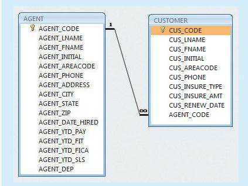
SOURCE: Course Technology/Cengage Learning
The relationship type (1:1, 1:M, or M:N) is often shown in a relational schema, an example of which is shown in Figure 2.2. A relational diagram is a representation of the relational database’s entities, the attributes within those entities, and the relationships between those entities.
In Figure 2.2, the relational diagram shows the connecting fields (in this case, AGENT_CODE) and the relationship type, 1:M. Microsoft Access, the database software application used to generate Figure 2.2, employs the infinity symbol ( ∞ ) to indicate the “many” side. In this example, the CUSTOMER represents the “many” side because an AGENT can have many CUSTOMERs. The AGENT represents the “1” side because each CUSTOMER has only one AGENT.
A relational table stores a collection of related entities. In this respect, the relational database table resembles a file, but there is a crucial difference between a table and a file: A table yields complete data and structural independence because it is a purely logical structure. How the data are physically stored in the database is of no concern to the user or the designer; the perception is what counts. This property of the relational data model, which is explored in depth in the next chapter, became the source of a real database revolution.
Another reason for the relational data model’s rise to dominance is its powerful and flexible query language. Most relational database software uses Structured Query Language (SQL), which allows the user to specify what must be done without specifying how. The RDBMS uses SQL to translate user queries into instructions for retrieving the requested data. SQL makes it possible to retrieve data with far less effort than any other database or file environment.
From an end-user perspective, any SQL-based relational database application involves three parts: a user interface, a set of tables stored in the database, and the SQL “engine.” Each of these parts is explained below.
• The end-user interface. Basically, the interface allows the end user to interact with the data (by automatically generating SQL code). Each interface is a product of the software vendor’s idea of meaningful interaction with the data. You can also design your own customized interface with the help of application generators that are now standard fare in the database software arena.
• A collection of tables stored in the database. In a relational database, all data are perceived to be stored in tables. The tables simply “present” the data to the end user in a way that is easy to understand. Each table is independent. Rows in different tables are related by common values in common attributes.
• SQL engine. Largely hidden from the end user, the SQL engine executes all queries, or data requests. Keep in mind that the SQL engine is part of the DBMS software. The end user uses SQL to create table structures and to perform data access and table maintenance. The SQL engine processes all user requests—largely behind the scenes and without the end user’s knowledge. Hence, SQL is said to be a declarative language that tells what must be done but not how. (You will learn more about the SQL engine in Chapter 11, Database Performance Tuning and Query Optimization.)
Because the RDBMS performs some tasks behind the scenes, it is not necessary to focus on the physical aspects of the database. Instead, the following chapters concentrate on the logical portion of the relational database and its design. Furthermore, SQL is covered in detail in Chapter 7, Introduction to Structured Query Language (SQL), and in Chapter 8, Advanced SQL.
2.5.3 THE ENTITY RELATIONSHIP MODEL
The conceptual simplicity of relational database technology triggered the demand for RDBMSs. In turn, the rapidly increasing requirements for transaction and information created the need for more complex database implementation structures, thus creating the need for more effective database design tools. (Building a skyscraper requires more detailed design activities than building a doghouse, for example.)
Complex design activities require conceptual simplicity to yield successful results. Although the relational model was a vast improvement over the hierarchical and network models, it still lacked the features that would make it an effective database design tool. Because it is easier to examine structures graphically than to describe them in text, database designers prefer to use a graphical tool in which entities and their relationships are pictured. Thus, the entity relationship (ER) model, or ERM, has become a widely accepted standard for data modeling.
Peter Chen first introduced the ER data model in 1976; the graphical representation of entities and their relationships in a database structure quickly became popular because it complemented the relational data model concepts. The relational data model and ERM combined to provide the foundation for tightly structured database design. ER models are normally represented in an entity relationship diagram (ERD), which uses graphical representations to model database components.
NOTE
Because this chapter’s objective is to introduce data-modeling concepts, a simplified ERD is discussed in this section. You will learn how to use ERDs to design databases in Chapter 4, Entity Relationship (ER) Modeling.
The ER model is based on the following components:
• Entity. Earlier in this chapter, an entity was defined as anything about which data will be collected and stored. An entity is represented in the ERD by a rectangle, also known as an entity box. The name of the entity, a noun, is written in the center of the rectangle. The entity name is generally written in capital letters and in singular form: PAINTER rather than PAINTERS, and EMPLOYEE rather than EMPLOYEES. Usually, when applying the ERD to the relational model, an entity is mapped to a relational table. Each row in the relational table is known as an entity instance or entity occurrence in the ER model.
NOTE
A collection of like entities is known as an entity set. For example, you can think of the AGENT file in Figure 2.1 as a collection of three agents (entities) in the AGENT entity set. Technically speaking, the ERD depicts entity sets. Unfortunately, ERD designers use the word entity as a substitute for entity set, and this book will conform to that established practice when discussing any ERD and its components.
Each entity consists of a set of attributes that describes particular characteristics of the entity. For example, the entity EMPLOYEE will have attributes such as a Social Security number, a last name, and a first name. (Chapter 4 explains how attributes are included in the ERD.)
• Relationships. Relationships describe associations among data. Most relationships describe associations between two entities. When the basic data model components were introduced, three types of data relationships were illustrated: one-to-many (1:M), many-to-many (M:N), and one-to-one (1:1). The ER model uses the term connectivity to label the relationship types. The name of the relationship is usually an active or passive verb. For example, a PAINTER paints many PAINTINGs, an EMPLOYEE learns many SKILLs, and an EMPLOYEE manages a STORE.
Figure 2.3 shows the different types of relationships using three ER notations: the original Chen notation, the Crow’s Foot notation, and the newer class diagram notation, which is part of the Unified Modeling Language (UML).
The left side of the ER diagram shows the Chen notation, based on Peter Chen’s landmark paper. In this notation, the connectivities are written next to each entity box. Relationships are represented by a diamond connected to the related entities through a relationship line. The relationship name is written inside the diamond.
The middle of Figure 2.3 illustrates the Crow’s Foot notation. The name Crow’s Foot is derived from the three-pronged symbol used to represent the “many” side of the relationship. As you examine the basic Crow’s Foot ERD in Figure 2.3, note that the connectivities are represented by symbols. For example, the “1” is represented by a short line segment, and the “M” is represented by the three-pronged “crow’s foot.” In this example, the relationship name is written above the relationship line.
The right side of Figure 2.3 shows the UML notation (also known as the UML class notation). Note that the connectivities are represented by lines with symbols (1..1, 1..*). Also, the UML notation uses names in both sides of the relationship. For example, to read the relationship between PAINTER and PAINTING, note that:
• A PAINTER “paints” one to many PAINTINGs, as indicated by the 1..* symbol.
• A PAINTING is “painted by” one and only one PAINTER, as indicated by the 1..1 symbol.
FIGURE 2.3 The ER model notations
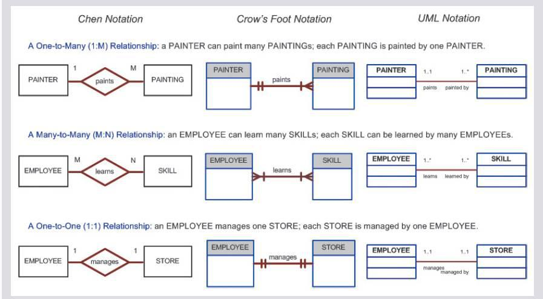
SOURCE: Course Technology/Cengage Learning
NOTE
Many-to-many (M:N) relationships exist at a conceptual level, and you should know how to recognize them. However, you will learn in Chapter 3 that M:N relationships are not appropriate in a relational model. For that reason, Microsoft Visio does not support the M:N relationship directly. Therefore, to illustrate the existence of an M:N relationship using Visio, you have to change the line style of the connector (see Appendix A, Designing Databases with Visio Professional: A Tutorial, at www.cengagebrain.com).
In Figure 2.3, entities and relationships are shown in a horizontal format, but they may also be oriented vertically. The entity location and the order in which the entities are presented are immaterial; just remember to read a 1:M relationship from the “1” side to the “M” side.
The Crow’s Foot notation is used as the design standard in this book. However, the Chen notation is used to illustrate some of the ER modeling concepts whenever necessary. Most data modeling tools let you select the Crow’s Foot or UML’s class diagram notation. Microsoft Visio Professional software was used to generate the Crow’s Foot designs you will see in subsequent chapters.
ONLINE CONTENT
Aside from the Chen, Crow’s Foot, and UML notations, there are other ER model notations. For a summary of the symbols used by several additional ER model notations, see Appendix E, Comparison of ER Model Notations, at www.cengagebrain.com.
The ER model’s exceptional visual simplicity makes it the dominant database modeling and design tool. Nevertheless, the search for better data-modeling tools continues as the data environment continues to evolve.
2.5.4 THE OBJECT-ORIENTED (OO) MODEL
Increasingly complex real-world problems demonstrated a need for a data model that more closely represented the real world. In the object-oriented data model (OODM), both data and their relationships are contained in a single structure known as an object. In turn, the OODM is the basis for the object-oriented database management system (OODBMS).
ONLINE CONTENT
This chapter introduces only basic OO concepts. You can examine object-orientation concepts and principles in detail in Appendix G, Object-Oriented Databases, at www.cengagebrain.com.
An OODM reflects a very different way to define and use entities. Like the relational model’s entity, an object is described by its factual content. But, quite unlike an entity, an object includes information about relationships between the facts within the object, as well as information about its relationships with other objects. Therefore, the facts within the object are given greater meaning. The OODM is said to be a semantic data model because semantic indicates meaning.
Subsequent OODM development has allowed an object also to contain all operations that can be performed on it, such as changing its data values, finding a specific data value, and printing data values. Because objects include data, various types of relationships, and operational procedures, the object becomes self-contained, thus making it—at least potentially—a basic building block for autonomous structures.
The OO data model is based on the following components:
• An object is an abstraction of a real-world entity. In general terms, an object may be considered equivalent to an ER model’s entity. More precisely, an object represents only one occurrence of an entity. (The object’s semantic content is defined through several of the items in this list.)
• Attributes describe the properties of an object. For example, a PERSON object includes the attributes Name, Social Security Number, and Date of Birth.
• Objects that share similar characteristics are grouped in classes. A class is a collection of similar objects with shared structure (attributes) and behavior (methods). In a general sense, a class resembles the ER model’s entity set. However, a class is different from an entity set in that it contains a set of procedures known as methods. A class’s method represents a real-world action such as finding a selected PERSON’s name, changing a PERSON’s name, or printing a PERSON’s address. In other words, methods are the equivalent of procedures in traditional programming languages. In OO terms, methods define an object’s behavior.
• Classes are organized in a class hierarchy. The class hierarchy resembles an upside-down tree in which each class has only one parent. For example, the CUSTOMER class and the EMPLOYEE class share a parent PERSON class. (Note the similarity to the hierarchical data model in this respect.)
• Inheritance is the ability of an object within the class hierarchy to inherit the attributes and methods of the classes above it. For example, two classes, CUSTOMER and EMPLOYEE, can be created as subclasses from the class PERSON. In this case, CUSTOMER and EMPLOYEE will inherit all attributes and methods from PERSON.
Object-oriented data models are typically depicted using Unified Modeling Language (UML) class diagrams. UML is a language based on OO concepts that describes a set of diagrams and symbols you can use to graphically model a system. UML class diagrams are used to represent data and their relationships within the larger UML object-oriented system’s modeling language. For a more complete description of UML, see Appendix H, Unified Modeling Language (UML).
To illustrate the main concepts of the object-oriented data model, consider a simple invoicing problem. In this case, invoices are generated by customers, each invoice references one or more lines, and each line represents an item purchased by a customer. Figure 2.4 illustrates the object representation for this simple invoicing problem, as well as the equivalent UML class diagram and ER model. The object representation is a simple way to visualize a single object occurrence.
FIGURE 2.4 A comparison of OO, UML, and ER models
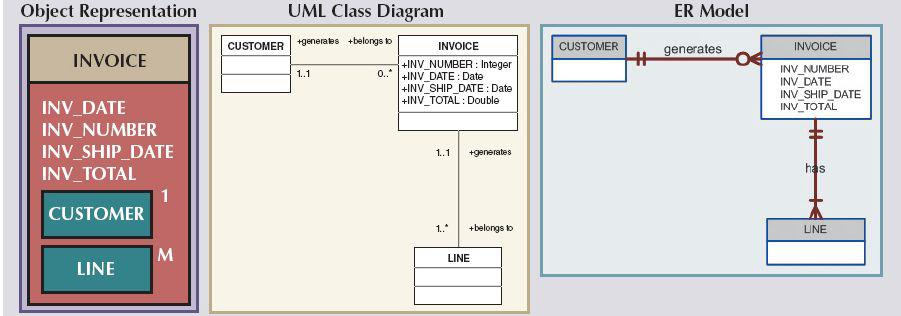
SOURCE: Course Technology/Cengage Learning
As you examine Figure 2.4, note that:
• The object representation of the INVOICE includes all related objects within the same object box. Note that the connectivities (1 and M) indicate the relationship of the related objects to the INVOICE. For example, the “1” next to the CUSTOMER object indicates that each INVOICE is related to only one CUSTOMER. The “M” next to the LINE object indicates that each INVOICE contains many LINEs.
• The UML class diagram uses three separate object classes (CUSTOMER, INVOICE, and LINE) and two relationships to represent this simple invoicing problem. Note that the relationship connectivities are represented by the 1..1, 0..*, and 1..* symbols, and that the relationships are named in both ends to represent the different “roles” that the objects play in the relationship.
• The ER model also uses three separate entities and two relationships to represent this simple invoice problem.
The OODM advances influenced many areas, from system modeling to programming. (Most contemporary programming languages have adopted OO concepts, including Java, Ruby, Perl, C#, and Visual Studio .NET.) The added semantics of the OODM allowed for a richer representation of complex objects. This in turn enabled applications to support increasingly complex objects in innovative ways. As you will see in the next section, such evolutionary advances also affected the relational model.
2.5.5 OBJECT/RELATIONAL AND XML
Facing the demand to support more complex data representations, the relational model’s main vendors evolved the model further and created the extended relational data model (ERDM). The ERDM adds many of the OO model’s features within the inherently simpler relational database structure. The ERDM gave birth to a new generation of relational databases that support OO features such as objects (encapsulated data and methods), extensible data types based on classes, and inheritance. That’s why a DBMS based on the ERDM is often described as an object/relational database management system (O/R DBMS).
Today, most relational database products can be classified as object/relational, and they represent the dominant market share of OLTP and OLAP database applications. The success of the O/R DBMS can be attributed to the model’s conceptual simplicity, data integrity, easy-to-use query language, high transaction performance, high availability, security, scalability, and expandability. In contrast, the OO DBMS is popular in niche markets such as computer-aided drawing/computer-aided manufacturing (CAD/CAM), geographic information systems (GIS), telecommunications, and multimedia, which require support for more complex objects.
From the start, the OO and relational data models were developed in response to different problems. The OO data model was created to address very specific engineering needs, not the wide-ranging needs of general data management tasks. The relational model was created with a focus on better data management based on a sound mathematical foundation. Given its focus on a smaller set of problem areas, it is not surprising that the OO market has not grown as rapidly as the relational data model market.
The use of complex objects received a boost with the Internet revolution. When organizations integrated their business models with the Internet, they realized its potential to access, distribute, and exchange critical business information. This resulted in the widespread adoption of the Internet as a business communication tool. Within this environment, Extensible Markup Language (XML) emerged as the de facto standard for the efficient and effective exchange of structured, semistructured, and unstructured data. Organizations that use XML data soon realized that they needed to manage large amounts of unstructured data such as word-processing documents, Web pages, e-mails, and diagrams. To address this need, XML databases emerged to manage unstructured data within a native XML format. (See Chapter 14, Database Connectivity and Web Technologies, for more information about XML.) At the same time, O/R DBMSs added support for XML-based documents within their relational data structure. Due to its robust foundation in broadly applicable principles, the relational model is easily extended to include new classes of capabilities, such as objects and XML.
Although relational and object/relational databases address most current data processing needs, a new generation of databases has emerged to address some very specific challenges found in some Internet-era organizations.
2.5.6 EMERGING DATA MODELS: BIG DATA AND NOSQL
Deriving usable business information from the mountains of Web data that organizations have accumulated over the years has become an imperative need. Web data in the form of browsing patterns, purchasing histories, customer preferences, behavior patterns, and social media data from sources such as Facebook, Twitter, and LinkedIn have inundated organizations with combinations of structured and unstructured data. According to many studies, the rapid pace of data growth is the top challenge for organizations,1 with system performance and scalability as the next biggest challenges. Today’s information technology (IT) managers are constantly balancing the need to manage this rapidly growing data with shrinking budgets. The need to manage and leverage all these converging trends (rapid data growth, performance, scalability, and lower costs) has triggered a phenomenon called “Big Data.” Big Data refers to a movement to find new and better ways to manage large amounts of Web-generated data and derive business insight from it, while simultaneously providing high performance and scalability at a reasonable cost.
The problem is that the relational approach does not always match the needs of organizations with Big Data challenges.
• It is not always possible to fit unstructured, social media data into the conventional relational structure of rows and columns.
• Adding millions of rows of multiformat (structured and nonstructured) data on a daily basis will inevitably lead to the need for more storage, processing power, and sophisticated data analysis tools that may not be available in the relational environment.
• Generally speaking, the type of high-volume implementations required in the RDBMS environment for the Big Data problem comes with a hefty price tag for expanding hardware, storage, and software licenses.
• Data analysis based on OLAP tools has proven to be very successful in relational environments with highly structured data. However, mining for usable data in the vast amounts of unstructured data collected from Web sources requires a different approach.
There is no “one-size-fits-all” cure to data management needs (although many established database vendors will probably try to sell you on the idea). For some organizations, creating a highly scalable, fault-tolerant infrastructure for Big Data analysis could prove to be a matter of business survival. The business world has many examples of companies that leverage technology to gain a competitive advantage, and others that miss it. Just ask yourself how the business landscape would be different if:
• MySpace had responded to Facebook’s challenge in time.
• Blockbuster had reacted to the Netflix business model sooner.
• Barnes & Noble had developed a viable Internet strategy before Amazon.
Therefore, it is not surprising that some organizations are turning to NoSQL databases to mine the wealth of information hidden in mountains of Web data and gain a competitive advantage.
NOTE
Does this mean that relational databases don’t have a place in organizations with Big Data challenges? No, relational databases remain the preferred and dominant databases to support most day-to-day transactions and structured data analytics needs. Each DBMS technology has its areas of application, and the best approach is to use the best tool for the job. In perspective, object/relational databases serve 98% of market needs. For the remaining 2%, NoSQL databases are an option.
NoSQL Databases
Every time you search for a product on Amazon, send messages to friends in Facebook, watch a video in YouTube, or search for directions in Google Maps, you are using a NoSQL database. As with any new technology, the term NoSQL can be loosely applied to many different types of technologies. However, this chapter uses NoSQL to refer to a new generation of databases that address the specific challenges of the Big Data era and have the following general characteristics:
• Not based on the relational model, hence the name NoSQL.
• Supports distributed database architectures.
• Provides high scalability, high availability, and fault tolerance.
• Supports very large amounts of sparse data.
• Geared toward performance rather than transaction consistency.
Let’s examine these characteristics in more detail.
NoSQL databases are not based on the relational model. In fact, there is no standard NoSQL data model. To the contrary, many different data models are grouped under the NoSQL umbrella, from document databases to graph stores, column stores, and key-value stores. It is still too early to know which, if any, of these data models will survive and grow to become a dominant force in the database arena. However, the early success of products such as Amazon’s SimpleDB, Google’s BigTable, and Apache’s Cassandra points to the key-value stores and column stores as the early leaders. The word stores indicates that these data models permanently store data in secondary storage, just like any other database. This added emphasis comes from the fact that these data models originated from programming languages (such as LISP), in which in-memory arrays of values are used to hold data.
The key-value data model is based on a structure composed of two data elements: a key and a value, in which every key has a corresponding value or set of values. The key-value data model is also referred to as the attribute-value or associative data model. To better understand the key-value model, look at the simple example in Figure 2.5.
Figure 2.5 shows the example of a small truck-driving company called Trucks-R-Us. Each of the three drivers has one or more certifications and other general information. Using this example, we can draw the following important points:
• In the relational model, every row represents a single entity occurrence and every column represents an attribute of the entity occurrence. Each column has a defined data type.
FIGURE 2.5 A simple key-value representation
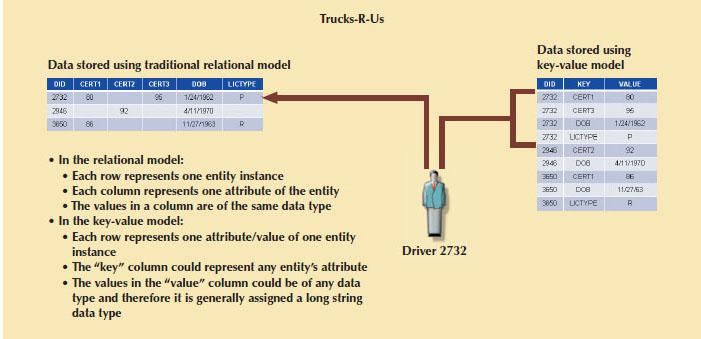
SOURCE: Course Technology/Cengage Learning
• In the key-value data model, each row represents one attribute of one entity instance. The “key” column points to an attribute and the “value” column contains the actual value for the attribute.
• The data type of the “value” column is generally a long string to accommodate the variety of actual data types of the values placed in the column.
• To add a new entity attribute in the relational model, you need to modify the table definition. To add a new attribute in the key-value store, you add a row to the key-value store, which is why it is said to be “schema-less.”
• NoSQL databases do not store or enforce relationships among entities. The programmer is required to manage the relationships in the program code. Furthermore, all data and integrity validations must be done in the program code (although some implementations have been expanded to support metadata).
• NoSQL databases use their own native application programming interface (API) with simple data access commands, such as put, read, and delete. Because there is no declarative SQL-like syntax to retrieve data, the program code must take care of retrieving related data in the correct way.
• Indexing and searches can be difficult. Because the “value” column in the key-value data model could contain many different data types, it is often difficult to create indexes on the data. At the same time, searches can become very complex.
As a matter of fact, you could use the key-value structure as a general data modeling technique when attributes are numerous but actual data values are scarce. The key-value data model is not exclusive of NoSQL databases; actually, key-value data structures could reside inside a relational database. However, because of the problems with maintaining relationships and integrity within the data, and the increased complexity of even simple queries, key-value structures would be a poor design for most structured business data.
Several NoSQL database implementations, such as Google’s BigTable and Apache’s Cassandra, have extended the key-value data model to group multiple key-value sets into column families or column stores. In addition, such implementations support features such as versioning using a date/time stamp. For example, BigTable stores data in the syntax of [row, column, time, value], where row, column, and value are string data types and time is a date/time data type. The key used to access the data is composed of (row, column, time), where time can be left blank to indicate the most recent stored value.
NoSQL supports distributed database architecture. One of the big advantages of NoSQL databases is that they generally use a distributed architecture. In fact, several of them (Cassandra, BigTable) are designed to use low-cost commodity servers to form a complex network of distributed database nodes. Remember that several NoSQL databases originated in the research labs of some of the most successful Web companies, and most started on very small budgets!
NoSQL supports very large amounts of sparse data. NoSQL databases can handle very high volumes of data. In particular, they are suited for sparse data—that is, for cases in which the number of attributes is very large but the number of actual data instances is low. Using the preceding example, drivers can take any certification exam, but they are not required to take all. In this case, if there are three drivers and three possible certificates for each driver, there will be nine possible data points. In practice, however, there are only four data instances. Now extrapolate this example for the case of a clinic with 15,000 patients and more than 500 possible tests, remembering that each patient can take a few tests but is not required to take all.
NoSQL provides high scalability, high availability, and fault tolerance. True to its Web origins, NoSQL databases are designed to support Web operations, such as the ability to add capacity in the form of nodes to the distributed database when the demand is high, and to do it transparently and without downtime. Fault tolerance means that if one of the nodes in the distributed database fails, it will keep operating as normal.
Most NoSQL databases are geared toward performance rather than transaction consistency. One of the biggest problems of very large distributed databases is enforcing data consistency. Distributed databases automatically make copies of data elements at multiple nodes to ensure high availability and fault tolerance. If the node with the requested data goes down, the request can be served from any other node with a copy of the data. However, what happens if the network goes down during a data update? In a relational database, transaction updates are guaranteed to be consistent or the transaction is rolled back. NoSQL databases sacrifice consistency to attain high levels of performance. (See Chapter 12, Distributed Database Management Systems, to learn more about this topic.) Some NoSQL databases provide a feature called eventual consistency, which means that updates to the database will propagate through the system and eventually all data copies will be consistent. With eventual consistency, data are not guaranteed to be consistent across all copies of the data immediately after an update.
NoSQL is one of the hottest items in database technologies today. But, as you learned in Chapter 1, it is only one of many emerging trends in data management. Whatever database technology you use, you need to be able to select the best tool for the job by understanding the pros and cons of each technology. The following section briefly summarizes the evolution of data models and provides some advantages and disadvantages of each.
The evolution of DBMSs has always been driven by the search for new ways of modeling and managing increasingly complex real-world data. A summary of the most commonly recognized data models is shown in Figure 2.6.
In the evolution of data models, some common characteristics have made them widely accepted:
• A data model must show some degree of conceptual simplicity without compromising the semantic completeness of the database. It does not make sense to have a data model that is more difficult to conceptualize than the real world. At the same time, the model should show clarity and relevance; that is, the data model should be unambiguous and applicable to the problem domain.
• A data model must represent the real world as closely as possible. This goal is more easily realized by adding more semantics to the model’s data representation. (Semantics concern dynamic data behavior, while data representation constitutes the static aspect of the real-world scenario.) In other words, the model should be accurate and complete—all the needed data are included and properly described.
• Representation of the real-world transformations (behavior) must be in compliance with the consistency and integrity characteristics required by the intended use of the data model.
FIGURE 2.6 The evolution of data models
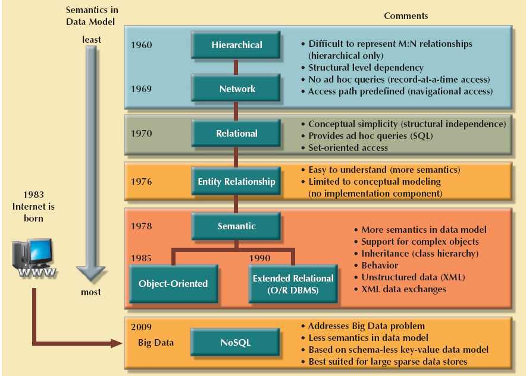
SOURCE: Course Technology/Cengage Learning
Each new data model addresses the shortcomings of previous models. The network model replaced the hierarchical model because the former made it much easier to represent complex (many-to-many) relationships. In turn, the relational model offers several advantages over the hierarchical and network models through its simpler data representation, superior data independence, and easy-to-use query language; these features made it the preferred data model for business applications. The OO data model introduced support for complex data within a rich semantic framework. The ERDM added many OO features to the relational model and allowed it to maintain strong market share within the business environment. In recent years, the Big Data phenomenon also has stimulated the development of alternative ways to model, store, and manage data that represents a break with traditional data management.
It is important to note that not all data models are created equal; some data models are better suited than others for some tasks. For example, conceptual models are better suited for high-level data modeling, while implementation models are better for managing stored data for implementation purposes. The entity relationship model is an example of a conceptual model, while the hierarchical and network models are examples of implementation models. At the same time, some models, such as the relational model and the OODM, could be used as both conceptual and implementation models. Table 2.2 summarizes the advantages and disadvantages of the various database models.
NOTE
All databases assume the use of a common data pool within the database. Therefore, all database models promote data sharing, thus reducing the potential problem of islands of information.
TABLE 2.2 Advantages and Disadvantages of Various Database Models
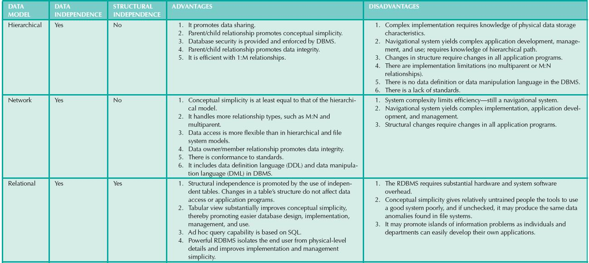
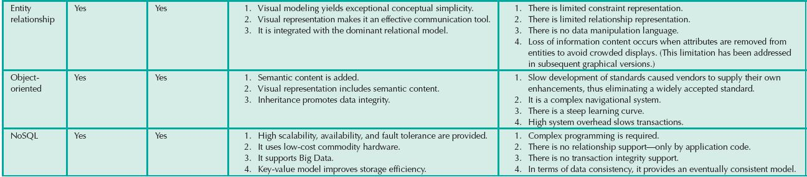
Thus far, you have been introduced to the basic constructs of the more prominent data models. Each model uses such constructs to capture the meaning of the real-world data environment. Table 2.3 shows the basic terminology used by the various data models.
TABLE 2.3 Data Model Basic Terminology Comparison
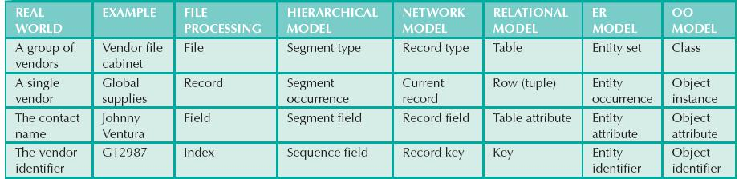
Note: For additional information about the terms used in this table, consult the corresponding chapters and online appendixes that accompany this book. For example, if you want to know more about the OO model, refer to Appendix G, Object-Oriented Databases.
2.6 DEGREES OF DATA ABSTRACTION
If you ask 10 database designers what a data model is, you will end up with 10 different answers—depending on the degree of data abstraction. To illustrate the meaning of data abstraction, consider the example of automotive design. A car designer begins by drawing the concept of the car to be produced. Next, engineers design the details that help transfer the basic concept into a structure that can be produced. Finally, the engineering drawings are translated into production specifications to be used on the factory floor. As you can see, the process of producing the car begins at a high level of abstraction and proceeds to an ever-increasing level of detail. The factory floor process cannot proceed unless the engineering details are properly specified, and the engineering details cannot exist without the basic conceptual framework created by the designer. Designing a usable database follows the same basic process. That is, a database designer starts with an abstract view of the overall data environment and adds details as the design comes closer to implementation. Using levels of abstraction can also be very helpful in integrating multiple (and sometimes conflicting) views of data at different levels of an organization.
In the early 1970s, the American National Standards Institute (ANSI) Standards Planning and Requirements Committee (SPARC) defined a framework for data modeling based on degrees of data abstraction. The resulting ANSI/ SPARC architecture defines three levels of data abstraction: external, conceptual, and internal. You can use this framework to better understand database models, as shown in Figure 2.7. In the figure, the ANSI/SPARC framework has been expanded with the addition of a physical model to explicitly address physical-level implementation details of the internal model.
The external model is the end users’ view of the data environment. The term end users refers to people who use the application programs to manipulate the data and generate information. End users usually operate in an environment in which an application has a specific business unit focus. Companies are generally divided into several business units, such as sales, finance, and marketing. Each business unit is subject to specific constraints and requirements, and each one uses a subset of the overall data in the organization. Therefore, end users within those business units view their data subsets as separate from or external to other units within the organization.
FIGURE 2.7 Data abstraction levels
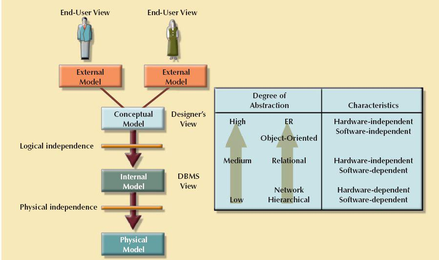
SOURCE: Course Technology/Cengage Learning
Because data are being modeled, ER diagrams will be used to represent the external views. A specific representation of an external view is known as an external schema. To illustrate the external model’s view, examine the data environment of Tiny College.
Figure 2.8 presents the external schemas for two Tiny College business units: student registration and class scheduling. Each external schema includes the appropriate entities, relationships, processes, and constraints imposed by the business unit. Also note that although the application views are isolated from each other, each view shares a common entity with the other view. For example, the registration and scheduling external schemas share the entities CLASS and COURSE.
Note the entity relationships represented in Figure 2.8. For example:
• A PROFESSOR may teach many CLASSes, and each CLASS is taught by only one PROFESSOR; there is a 1:M relationship between PROFESSOR and CLASS.
• A CLASS may ENROLL many students, and each STUDENT may ENROLL in many CLASSes, thus creating an M:N relationship between STUDENT and CLASS. (You will learn about the precise nature of the ENROLL entity in Chapter 4.)
• Each COURSE may generate many CLASSes, but each CLASS references a single COURSE. For example, there may be several classes (sections) of a database course that have a course code of CIS-420. One of those classes might be offered on MWF from 8:00 a.m. to 8:50 a.m., another might be offered on MWF from 1:00 p.m. to 1:50 p.m., while a third might be offered on Thursdays from 6:00 p.m. to 8:40 p.m. Yet, all three classes have the course code CIS-420.
• Finally, a CLASS requires one ROOM, but a ROOM may be scheduled for many CLASSes. That is, each classroom may be used for several classes: one at 9:00 a.m., one at 11:00 a.m., and one at 1:00 p.m., for example. In other words, there is a 1:M relationship between ROOM and CLASS.
FIGURE 2.8 External models for Tiny College
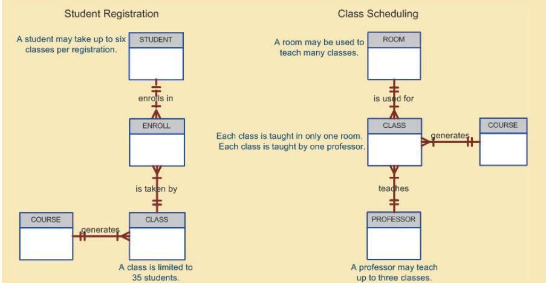
SOURCE: Course Technology/Cengage Learning
The use of external views that represent subsets of the database has some important advantages:
• It is easy to identify specific data required to support each business unit’s operations.
• It makes the designer’s job easy by providing feedback about the model’s adequacy. Specifically, the model can be checked to ensure that it supports all processes as defined by their external models, as well as all operational requirements and constraints.
• It helps to ensure security constraints in the database design. Damaging an entire database is more difficult when each business unit works with only a subset of data.
• It makes application program development much simpler.
The conceptual model represents a global view of the entire database by the entire organization. That is, the conceptual model integrates all external views (entities, relationships, constraints, and processes) into a single global view of the data in the enterprise, as shown in Figure 2.9. Also known as a conceptual schema, it is the basis for the identification and high-level description of the main data objects (avoiding any database model-specific details).
The most widely used conceptual model is the ER model. Remember that the ER model is illustrated with the help of the ERD, which is effectively the basic database blueprint. The ERD is used to graphically represent the conceptual schema.
The conceptual model yields some important advantages. First, it provides a bird’s-eye (macro level) view of the data environment that is relatively easy to understand. For example, you can get a summary of Tiny College’s data environment by examining the conceptual model in Figure 2.9.
Second, the conceptual model is independent of both software and hardware. Software independence means that the model does not depend on the DBMS software used to implement the model. Hardware independence means that the model does not depend on the hardware used in the implementation of the model. Therefore, changes in either the hardware or the DBMS software will have no effect on the database design at the conceptual level. Generally, the term logical design refers to the task of creating a conceptual data model that could be implemented in any DBMS.
Once a specific DBMS has been selected, the internal model maps the conceptual model to the DBMS. The internal model is the representation of the database as “seen” by the DBMS. In other words, the internal model requires the designer to match the conceptual model’s characteristics and constraints to those of the selected implementation model. An internal schema depicts a specific representation of an internal model, using the database constructs supported by the chosen database.
FIGURE 2.9 Conceptual model for Tiny College
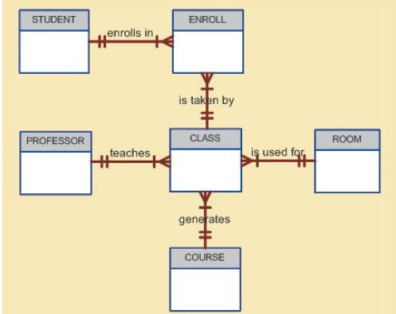
SOURCE: Course Technology/Cengage Learning
Because this book focuses on the relational model, a relational database was chosen to implement the internal model. Therefore, the internal schema should map the conceptual model to the relational model constructs. In particular, the entities in the conceptual model are mapped to tables in the relational model. Likewise, because a relational database has been selected, the internal schema is expressed using SQL, the standard language for relational databases. In the case of the conceptual model for Tiny College depicted in Figure 2.9, the internal model was implemented by creating the tables PROFESSOR, COURSE, CLASS, STUDENT, ENROLL, and ROOM. A simplified version of the internal model for Tiny College is shown in Figure 2.10.
The development of a detailed internal model is especially important to database designers who work with hierarchical or network models because those models require precise specification of data storage location and data access paths. In contrast, the relational model requires less detail in its internal model because most RDBMSs handle data access path definition transparently; that is, the designer need not be aware of the data access path details. Nevertheless, even relational database software usually requires specifications of data storage locations, especially in a mainframe environment. For example, DB2 requires that you specify the data storage group, the location of the database within the storage group, and the location of the tables within the database.
Because the internal model depends on specific database software, it is said to be software dependent. Therefore, a change in the DBMS software requires that the internal model be changed to fit the characteristics and requirements of the implementation database model. When you can change the internal model without affecting the conceptual model, you have logical independence. However, the internal model is still hardware independent because it is unaffected by the type of computer on which the software is installed. Therefore, a change in storage devices or even a change in operating systems will not affect the internal model.
The physical model operates at the lowest level of abstraction, describing the way data are saved on storage media such as disks or tapes. The physical model requires the definition of both the physical storage devices and the (physical) access methods required to reach the data within those storage devices, making it both software and hardware dependent. The storage structures used are dependent on the software (the DBMS and the operating system) and on the type of storage devices the computer can handle. The precision required in the physical model’s definition demands that database designers have a detailed knowledge of the hardware and software used to implement the database design.
FIGURE 2.10 Internal model for Tiny College
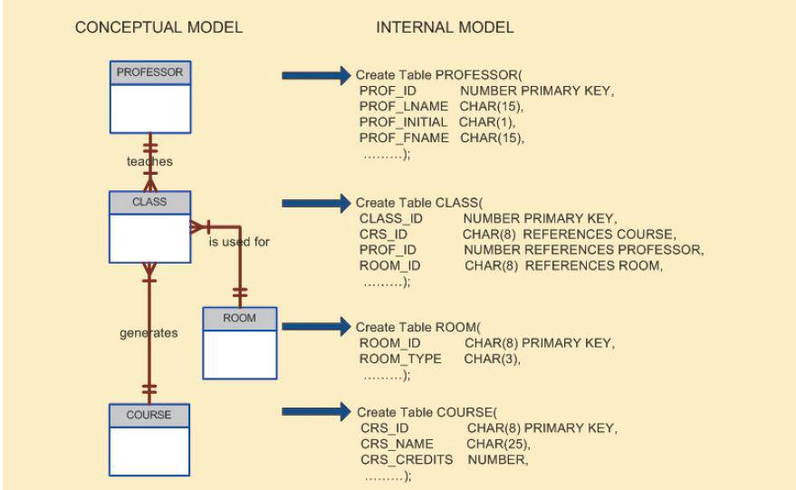
SOURCE: Course Technology/Cengage Learning
Early data models forced the database designer to take the details of the physical model’s data storage requirements into account. However, the now dominant relational model is aimed largely at the logical level rather than the physical level; therefore, it does not require the physical-level details common to its predecessors.
Although the relational model does not require the designer to be concerned about the data’s physical storage characteristics, the implementation of a relational model may require physical-level fine-tuning for increased performance. Fine-tuning is especially important when very large databases are installed in a mainframe environment, yet even such performance fine-tuning at the physical level does not require knowledge of physical data storage characteristics.
As noted earlier, the physical model is dependent on the DBMS, methods of accessing files, and types of hardware storage devices supported by the operating system. When you can change the physical model without affecting the internal model, you have physical independence. Therefore, a change in storage devices or methods and even a change in operating system will not affect the internal model.
The levels of data abstraction are summarized in Table 2.4.
TABLE 2.4 Levels of Data Abstraction
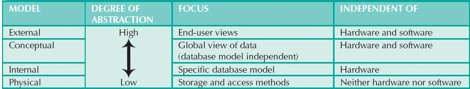
 A data model is an abstraction of a complex real-world data environment. Database designers use data models to communicate with programmers and end users. The basic data-modeling components are entities, attributes, relationships, and constraints. Business rules are used to identify and define the basic modeling components within a specific real-world environment.
A data model is an abstraction of a complex real-world data environment. Database designers use data models to communicate with programmers and end users. The basic data-modeling components are entities, attributes, relationships, and constraints. Business rules are used to identify and define the basic modeling components within a specific real-world environment.
The hierarchical and network data models were early models that are no longer used, but some of the concepts are found in current data models.
The relational model is the current database implementation standard. In the relational model, the end user perceives the data as being stored in tables. Tables are related to each other by means of common values in common attributes. The entity relationship (ER) model is a popular graphical tool for data modeling that complements the relational model. The ER model allows database designers to visually present different views of the data—as seen by database designers, programmers, and end users—and to integrate the data into a common framework.
The object-oriented data model (OODM) uses objects as the basic modeling structure. Like the relational model’s entity, an object is described by its factual content. Unlike an entity, however, the object also includes information about relationships between the facts, as well as relationships with other objects, thus giving its data more meaning.
The relational model has adopted many object-oriented (OO) extensions to become the extended relational data model (ERDM). Object/relational database management systems (O/R DBMS) were developed to implement the ERDM. At this point, the OODM is largely used in specialized engineering and scientific applications, while the ERDM is primarily geared to business applications.
NoSQL databases are a new generation of databases that do not use the relational model and are geared to support the very specific needs of Big Data organizations. NoSQL databases offer distributed data stores that provide high scalability, availability, and fault tolerance by sacrificing data consistency and shifting the burden of maintaining relationships and data integrity to the program code.
Data-modeling requirements are a function of different data views (global vs. local) and the level of data abstraction. The American National Standards Institute Standards Planning and Requirements Committee (ANSI/SPARC) describes three levels of data abstraction: external, conceptual, and internal. The fourth and lowest level of data abstraction, called the physical level, is concerned exclusively with physical storage methods.
ONLINE CONTENT
Flashcards and crossword puzzles for key term practice are available at www.cengagebrain.com.
1. Discuss the importance of data models.
2. What is a business rule, and what is its purpose in data modeling?
3. How do you translate business rules into data model components?
4. What languages emerged to standardize the basic network data model, and why was such standardization important to users and designers?
5. Describe the basic features of the relational data model and discuss their importance to the end user and the designer.
6. Explain how the entity relationship (ER) model helped produce a more structured relational database design environment.
7. Consider the scenario described by the statement “A customer can make many payments, but each payment is made by only one customer.” Use this scenario as the basis for an entity relationship diagram (ERD) representation.
8. Why is an object said to have greater semantic content than an entity?
9. What is the difference between an object and a class in the object-oriented data model (OODM)?
10. How would you model Question 7 with an OODM? (Use Figure 2.4 as your guide.)
11. What is an ERDM, and what role does it play in the modern (production) database environment?
12. In terms of data and structural independence, compare file system data management with the five data models discussed in this chapter.
13. What is a relationship, and what three types of relationships exist?
14. Give an example of each of the three types of relationships.
15. What is a table, and what role does it play in the relational model?
16. What is a relational diagram? Give an example.
17. What is connectivity? (Use a Crow’s Foot ERD to illustrate connectivity.)
18. Describe the Big Data phenomenon.
19. What is sparse data? Give an example.
20. Define and describe the basic characteristics of a NoSQL database.
21. Using the example of a medical clinic with patients and tests, provide a simple representation of how to model this example using the relational model and how it would be represented using the key-value data modeling technique.
22. What is logical independence?
23. What is physical independence?
Use the contents of Figure 2.1 to work Problems 1–3.
1. Write the business rule(s) that govern the relationship between AGENT and CUSTOMER.
2. Given the business rule(s) you wrote in Problem 1, create the basic Crow’s Foot ERD.
3. Using the ERD you drew in Problem 2, create the equivalent object representation and UML class diagram. (Use Figure 2.4 as your guide.)
Using Figure P2.4 as your guide, work Problems 4–5. The DealCo relational diagram shows the initial entities and attributes for the DealCo stores, which are located in two regions of the country.
FIGURE P2.4 The DealCo relational diagram
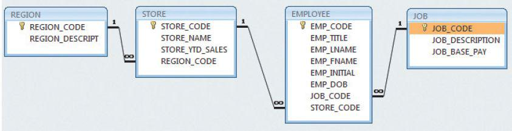
SOURCE: Course Technology/Cengage Learning
4. Identify each relationship type and write all of the business rules.
5. Create the basic Crow’s Foot ERD for DealCo.
Using Figure P2.6 as your guide, work Problems 6–8. The Tiny College relational diagram shows the initial entities and attributes for the college.
FIGURE P2.6 The Tiny College relational diagram
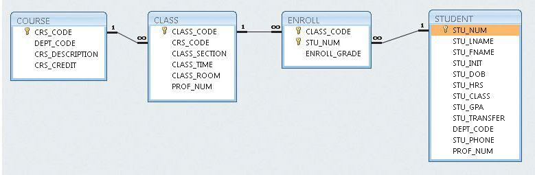
SOURCE: Course Technology/Cengage Learning
6. Identify each relationship type and write all of the business rules.
7. Create the basic Crow’s Foot ERD for Tiny College.
8. Create the UML class diagram that reflects the entities and relationships you identified in the relational diagram.
9. Typically, a hospital patient receives medications that have been ordered by a particular doctor. Because the patient often receives several medications per day, there is a 1:M relationship between PATIENT and ORDER. Similarly, each order can include several medications, creating a 1:M relationship between ORDER and MEDICATION.
a. Identify the business rules for PATIENT, ORDER, and MEDICATION.
b. Create a Crow’s Foot ERD that depicts a relational database model to capture these business rules.
10. United Broke Artists (UBA) is a broker for not-so-famous artists. UBA maintains a small database to track painters, paintings, and galleries. A painting is created by a particular artist and then exhibited in a particular gallery. A gallery can exhibit many paintings, but each painting can be exhibited in only one gallery. Similarly, a painting is created by a single painter, but each painter can create many paintings. Using PAINTER, PAINTING, and GALLERY, in terms of a relational database:
a. What tables would you create, and what would the table components be?
b. How might the (independent) tables be related to one another?
11. Using the ERD from Problem 10, create the relational schema. (Create an appropriate collection of attributes for each of the entities. Make sure you use the appropriate naming conventions to name the attributes.)
12. Convert the ERD from Problem 10 into a corresponding UML class diagram.
13. Describe the relationships (identify the business rules) depicted in the Crow’s Foot ERD shown in Figure P2.13.
FIGURE P2.13 The Crow’s Foot ERD for Problem 13
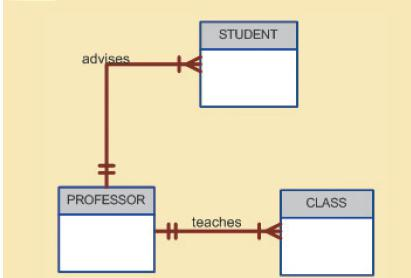
SOURCE: Course Technology/Cengage Learning
14. Create a Crow’s Foot ERD to include the following business rules for the ProdCo company:
15. Write the business rules that are reflected in the ERD shown in Figure P2.15. (Note that the ERD reflects some simplifying assumptions. For example, each book is written by only one author. Also, remember that the ERD is always read from the “1” to the “M” side, regardless of the orientation of the ERD components.)
FIGURE P2.15 The Crow’s Foot ERD for Problem 15
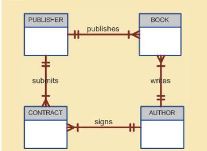
SOURCE: Course Technology/Cengage Learning
16. Create a Crow’s Foot ERD for each of the following descriptions. (Note that the word many merely means more than one in the database modeling environment.)
a. Each of the MegaCo Corporation’s divisions is composed of many departments. Each department has many employees assigned to it, but each employee works for only one department. Each department is managed by one employee, and each of those managers can manage only one department at a time.
b. During some period of time, a customer can rent many videotapes from the BigVid store. Each of BigVid’s videotapes can be rented to many customers during that period of time.
c. An airliner can be assigned to fly many flights, but each flight is flown by only one airliner.
d. The KwikTite Corporation operates many factories. Each factory is located in a region, and each region can be “home” to many of KwikTite’s factories. Each factory has many employees, but each employee is employed by only one factory.
e. An employee may have earned many degrees, and each degree may have been earned by many employees.
1 See www.gartner.com/it/page.jsp?id=1460213, “Gartner Survey Shows Data Growth as the Largest Data Center Infrastructure Challenge,” Nov. 2011.